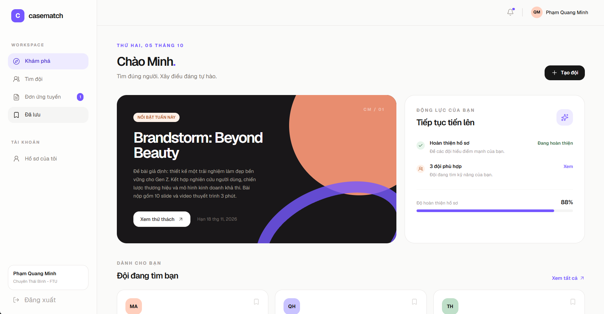

Projects

Digital Marketing & User Growth
Marketing · Advertising · App Growth · Social Media
I currently work part-time on marketing for 2K VPN, a VPN application. This is where I started getting hands-on experience with real marketing problems — where getting more users isn't necessarily the same as getting better users.
- Google Ads & other advertising platforms
- App Store / Google Play optimization
- User targeting & market research
- Social media content & Campaign performance analysis
Key takeaway: More traffic doesn't always mean better results. The quality of users, conversion journey, and actual business value matter just as much as acquisition volume.
Content Creation & Experimentation
Video Editing · Instagram · Social Media · Creative Testing
I experiment with short-form videos on Instagram, testing different formats, hooks, captions, editing styles, and posting approaches. One of my videos reached 160,000+ views, which gave me a chance to see firsthand how unpredictable — and interesting — content distribution can be.
- 01 — Hooks & opening sequences
- 02 — Editing pace & visual rhythm
- 03 — Captions & context
- 04 — Different content formats
- 05 — Organic reach & engagement
What I learned: There isn't always a single formula for content. Create → Observe → Experiment → Learn → Repeat.

images/casematch-screenshot.pngA Student-Focused Product Concept
Web Development · Product Design · Academic Project
CaseMatch is a website concept developed for a programming course. The idea is simple: Finding the right teammates for a case competition shouldn't be harder than the competition itself. Students can create profiles, discover competitions, find teams, and apply for open positions based on their interests and skills.
- Identifying a real student problem & product concept
- Designing the core user flow & key features
- Exploring AI-assisted development
- Learning how front-end, accounts, and databases connect
The interesting part: I came from an economics background, not CS. So this project became less about "knowing how to code" and more about learning how to turn an idea into something that works.